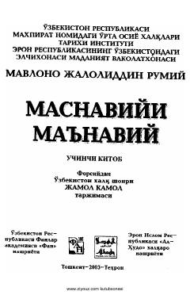

MMJaloliddin Rumiyning mashhur 'Masnaviyi ma'naviy' asarining Jamol Kamol tarjimasidagi uchinchi kitobi.
Jaloliddin Rumiyning jahon mumtoz adabiyotidagi eng yirik asarlaridan biri bo'lgan 'Masnaviyi ma'naviy' asarining o'zbek tiliga tarjima qilingan uchinchi kitobi. Ushbu nashr Muhammad Ist'olmiyning ilmiy tadqiqotlari va qadimiy qo'lyozmalar asosida tayyorlangan bo'lib, fors tilidan Jamol Kamol tomonidan o'girilgan.